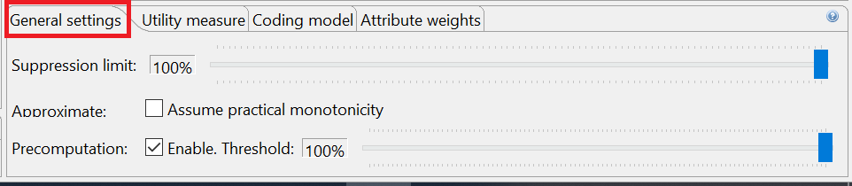
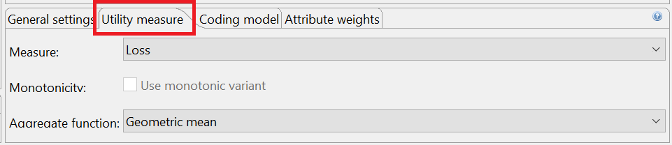
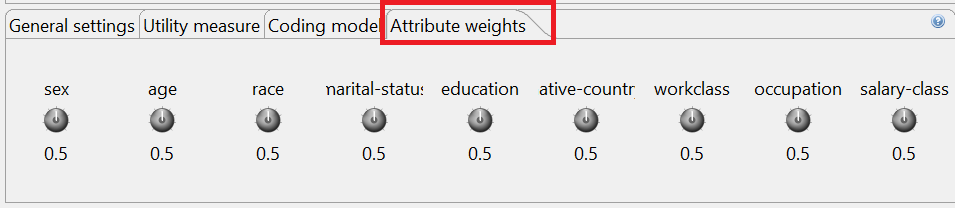
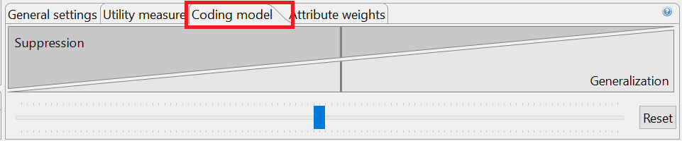

In the first tab of this view, general properties of the transformation process can be specified.
The first slider allows to define the suppression limit, which is the maximal number of records that can be removed from the input dataset. The recommended value for this parameter is "100%". The option "Approximate" can be enabled to compute an approximate solution with potentially significantly reduce execution times. The solution is guaranteed to fulfill the given privacy settings, but it might not be optimal regarding the data utility model specified. The recommended setting is "off". For some utility measures, precomputation steps can be used, which may also significantly reduced execution times. Precomputation is switched on when, for each quasi-identifier, the number of distinct data values divided by the total number of records in the dataset is lower than the configured threshold. Experiments have shown that 0.3 is often a good value for this parameter. The recommended setting is "off".
The second tab allows specifying the model for quantifying data quality which will be used as an optimization function during the anonymization process.
ARX will use the specified model to assign "scores" to potential solution candidates. A lower score is associated with higher data quality, less loss of information, higher publisher payout or increased classification accuracy, depending on the selected model. Note, however, that scores may significantly deviate from the actual values that would be returned by the models due to internal optimizations in ARX. As a consequence, you should never report "scores" as a measure describing data quality. To obtain such measures, the utility analysis perspective should be used.
Monotonicity is a property of privacy and utility models that can be exploited to make the anonymization process more efficient. In real-world settings, however, models are almost never monotonic due to the complexity of the transformation methods used by the software. ARX can be configured to always assume monotonicity, which will speed-up the anonymization process significantly but which may also lead to significant reductions in output data quality. The recommended setting is "off". ARX also supports user-defined aggregate functions for many quality models. These aggregate functions will be used to compile the estimates obtained for the individual attributes of a dataset into a global value. The recommended setting is "Arithmetic mean".
Most models support weights that can be assigned to attributes to specify their importance using the following view:
Each of the knobs can be used to associate a weight to a specific quasi-identifier. When anonymizing the dataset, ARX will try to reduce the loss of information for attributes with higher weights.
Some quality models also support specifying whether generalization or suppression should be preferred when transforming data:
